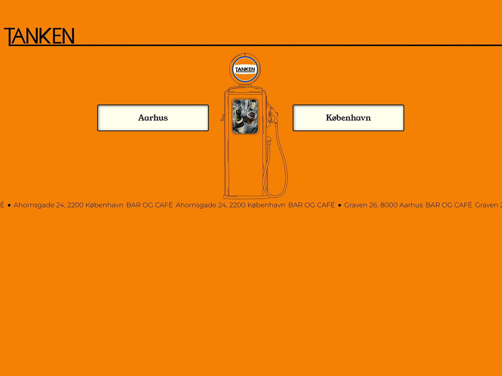
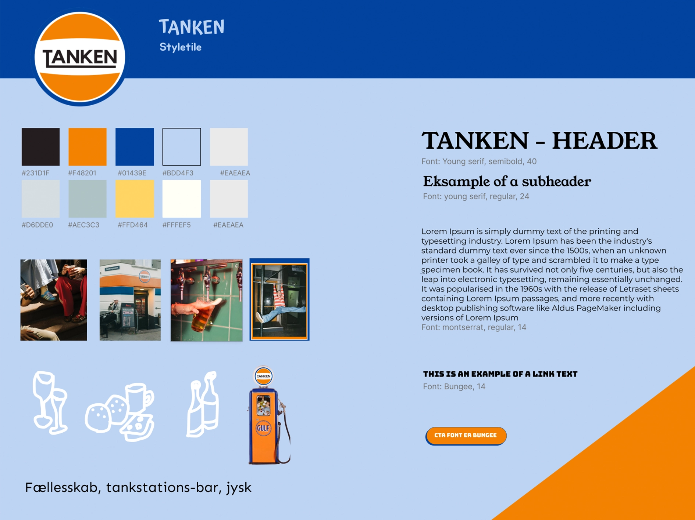
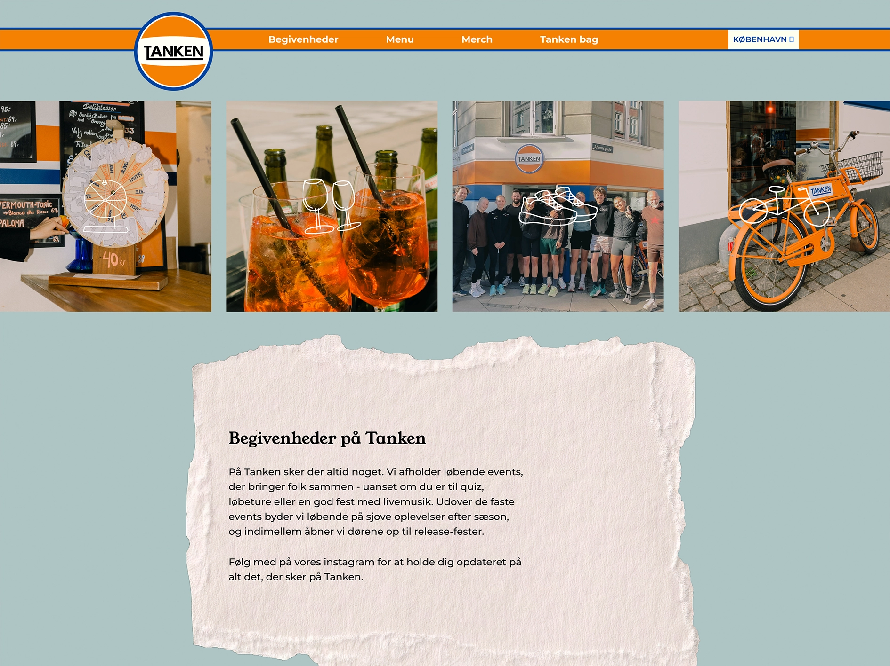
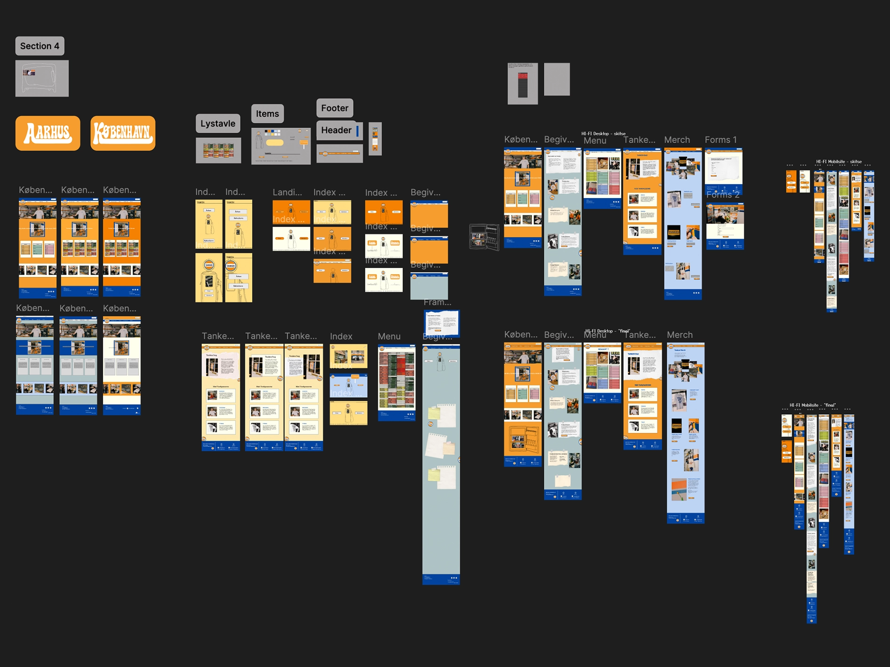

Tema 5 - grundlæggende indhold
Site: Virksomhedssite
Formål
Formålet med tema 5 er at opnå grundlæggende indblik i og viden om indholdsproduktion, herunder præproduktion, produktion og postproduktion. Tema 5 foregår i grupper og giver indsigt i, hvordan man designer og udvikler et produkt i samarbejde med andre. I temaet lærer man at arbejde med en ekstern virksomhed og at redesigne en eksisterende hjemmeside samt at kommunikere professionelt med en ekstern kilde. I temaet arbejder man også med at producere billedmateriale, videomateriale og interviews i samarbejde med virksomheden. De opnåede færdigheder fra tidligere temaer anvendes til at redesigne den valgte virksomheds hjemmeside.

Proces
I tema 5 arbejdede jeg sammen med fire andre om at redesigne hjemmesiden for virksomheden “Tanken”. Tanken er en kombination af café, kiosk og bar, og vores mål var at skabe en mere sammenhængende og moderne digital identitet for virksomheden. Projektet omfattede både redesign af hjemmesiden og videreudvikling af tekst samt produktion af billeder og video. Gruppen kom hurtigt godt fra start, da vi tidligt blev enige om valg af virksomhed og fik etableret et samarbejde med Tanken. Herefter arbejdede vi med research, idéudvikling og indsamling af information om virksomheden. På baggrund af dette udarbejdede vi wireframes, styletile og en detaljeret prototype, som dannede grundlag for den endelige løsning. Særligt processen med at kode sitet viste sig at være krævende, da arbejdet med GitHub som samarbejdsværktøj var nyt og udfordrende for gruppen.

Produkt
Virksomhedssitet består af en landingpage, en forside, “begivenheder”-side, “menu”-side, “merch”-side, “tanken bag”-side og en forms-side. Den færdige hjemmeside indeholder blandt andet information om Tankens koncept, menukort og atmosfære samt visuelt indhold produceret af gruppen. Selvom vi ikke nåede at færdiggøre alle de detaljer og funktioner, vi havde planlagt, lykkedes det os at skabe et samlet redesign, som afspejler virksomhedens identitet og stemning bedre end den oprindelige hjemmeside. Jeg har kodet siden “begivenheder”. Her har jeg implementeret mine færdigheder med grid og prøvet kræfter med at placere SVG-grafik i samspil med billeder i webp-format.
Se virksomhedssite her
Læring
Tema 5 gav mig erfaring med at arbejde i en større gruppe om et fælles produkt. Det har været en udfordring at bevare overblikket, når fem mennesker arbejder sammen om samme projekt, og det krævede mere koordinering, end jeg havde forventet. Gennem processen blev jeg mere bevidst om, hvor vigtig planlægning, rollefordeling og løbende kommunikation er for et godt samarbejde. Derudover fik jeg erfaring med at arbejde med en reel virksomhed og tilpasse design og indhold til en eksisterende identitet og målgruppe. Det gjorde projektet mere virkelighedsnært og gav mig en større forståelse for, at designprocessen ofte handler om at finde balancen mellem egne idéer, kundens ønsker og brugernes behov. Arbejdet med GitHub som samarbejdsværktøj var udfordrende, men jeg forventer at blive mere fortrolig med værktøjet fremover. Jeg oplevede processen som både lærerig og motiverende, fordi den gav indsigt i samarbejde, koordinering og udvikling af et digitalt produkt i en gruppe, som jeg kan tage med videre. Temaet har givet mig en forståelse for, at et godt digitalt produkt ikke kun afhænger af design og kodning, men i høj grad også af samarbejde, planlægning og kommunikation.
